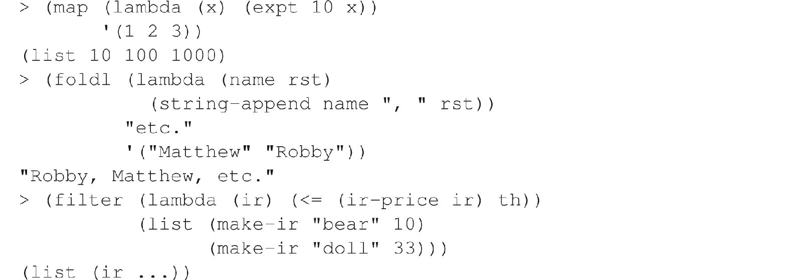
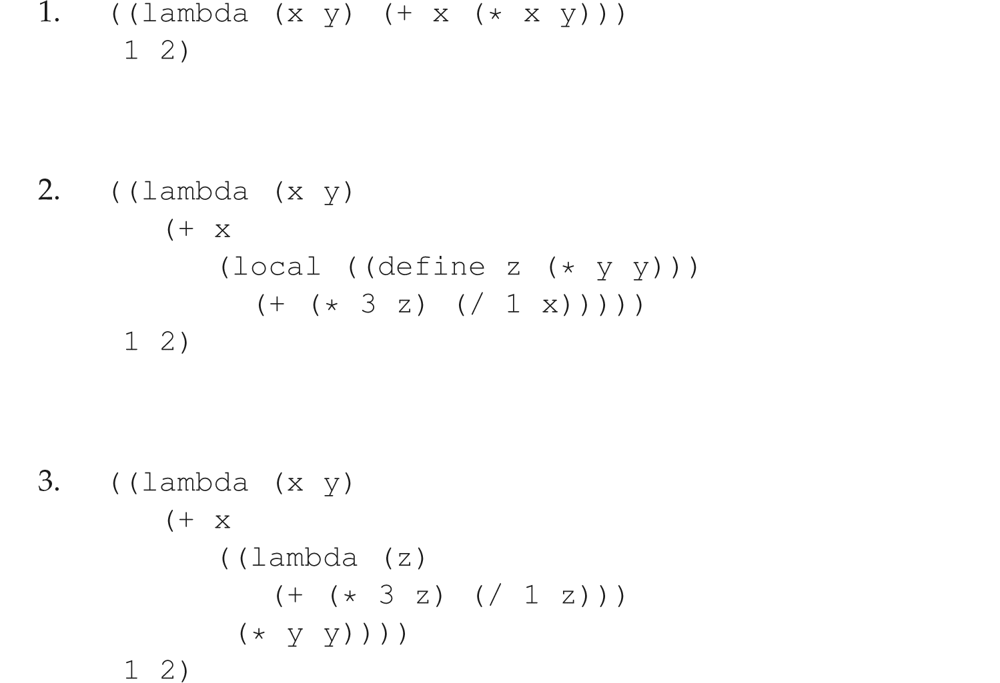

17.1 Functions from lambda
The syntax of lambda is straightforward:
(lambda (variable-1 … variable-N) expression)
Its distinguishing characteristic is the keyword lambda. The keyword is followed by a sequence of variables, enclosed in a pair of parentheses. The last piece is an arbitrary expression, and it computes the result of the function when it is given values for its parameters.
Here are three simple examples, all of which consume one argument:
1. (lambda (x) (expt 10 x)), which assumes that the argument is a number and computes the exponent of 10 to the number;
2. (lambda (n) (string-append "To " n ",")), which uses a given string to synthesize an address with string-append; and
3. (lambda (ir) (<= (ir-price ir) th)), which is a function on an IR structure that extracts the price and compares it with th.
One way to understand how lambda works is to view it as an abbreviation for a local expression. For example,
(lambda (x) (* 10 x))
is short for
(local ((define some-name (lambda (x) (* 10 x))))
some-name)
This way of thinking about lambda shows one more time why the rule for computing with local is complicated.
This “trick” works, in general, as long as some-name does not appear in the body of the function. What this means is that lambda creates a function with a name that nobody knows. If nobody knows the name, it might as well be nameless.
To use a function created from a lambda expression, you apply it to the correct number of arguments. It works as expected:
> ((lambda (x) (expt 10 x)) 2)
100
> ((lambda (name rst) (string-append name ", " rst))
"Robby"
"etc.")
"Robby, etc."
> ((lambda (ir) (<= (ir-price ir) th))
(make-ir "bear" 10))
#true
Note how the second sample function requires two arguments and that the last example assumes a definition for th in the definitions window such as this one:
(define th 20)
The result of the last example is #true because the price field of the inventory record contains 10, and 10 is less than 20.
The important point is that these nameless functions can be used wherever a function is required, including with the abstractions from figure 95:

Once again, the last example assumes a definition for th.
The dots are not part of the output.
Exercise 279. Decide which of the following phrases are legal lambda expressions:
1. (lambda (x y) (x y y))
2. (lambda () 10)
3. (lambda (x) x)
4. (lambda (x y) x)
5. (lambda x 10)
Explain why they are legal or illegal. If in doubt, experiment in the interactions area of DrRacket. 
Exercise 280. Calculate the result of the following expressions:

Check your results in DrRacket.
Exercise 281. Write down a lambda expression that
1. consumes a number and decides whether it is less than 10;
2. multiplies two given numbers and turns the result into a string;
3. consumes a natural number and returns 0 for evens and 1 for odds;
4. consumes two inventory records and compares them by price; and
5. adds a red dot at a given Posn to a given Image.
Demonstrate how to use these functions in the interactions area.